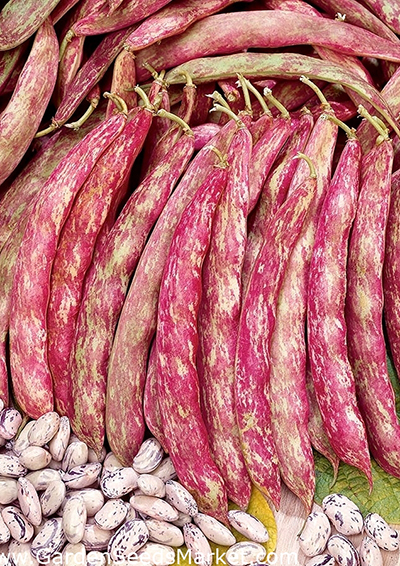

Bønne
Phaseolus vulgaris 'Borlotto Rosso'
- Type: Buskbønne
- Højde: 60 cm
- Såafstand: 25 cm
- Rækkeafstand: 25 cm
- Sådybde: 3 cm
- Lysforhold: Fuld sol
- Forspiring: Maj Juni
- Udplantning/såning på friland:Maj Juni
- Spiring efter: ca. 10 dage
- Moden til høst efter: ca. 63 dage
Beskrivelse:
Den økologiske Borlotto-bønne er en smuk og yderst velsmagende bønne. Dens bælge har markante røde marmoreringer, som bliver mere og mere rødlige, næsten pink, efterhånden som de modnes. Bønnerne er næsten runde, og hver enkelt har sit helt mønster af rødbrune aftegninger på en cremehvid bund. Borlotto-bønnerne har en lækker cremet og sødlig, nøddeagtig smag. Absolut de bedste bønner vi har smagt. Tag bønnerne ud af deres bælg, giv dem en kort tur i kogende vand og server dem med f.eks. en lækker olivenolie, revet parmesan, salt og citron, eller bland dem i salater m.v. Bælgene bliver ca. 14-15 cm lange og indeholder ca. 5-6 bønner hver. Borlotto-bønner kan tilberedes og serveres som tørrede flageolet- eller cannellini-bønner.
Såning: Læg evt. frøene i blød natten over før såning. Vand såområdet før såning. Hold dem fugtige under spiringen. Forspir indendørs fra marts og sæt dem ud eller så direkte på det blivende sted når nattetemperaturen er over 10 grader.